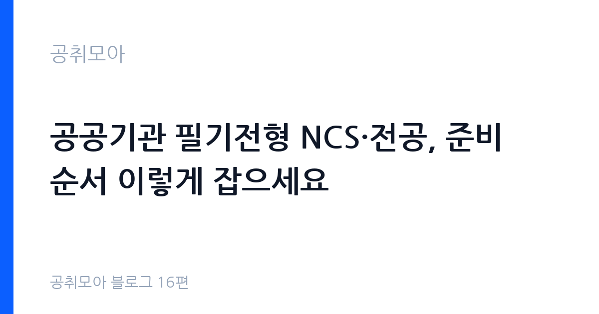

공공기관 필기전형 NCS·전공, 준비 순서 이렇게 잡으세요
2026-11-01 · 공취모아 블로그 16편

0단계: 문제집보다 전형표가 먼저입니다
필기 준비의 첫 단계는 공부가 아니라 확인입니다. 원문 공고문에서 필기시험 과목, 영역별 문항 수, 배점, 합격선 결정 방식(절대평가·상대평가·과락 기준)을 찾으세요. 같은 기관이라도 직렬·직급에 따라 NCS만 보는 곳, 전공만 보는 곳, 둘 다 보는 곳이 갈립니다. 과락 기준이 있는 영역을 놓치면 총점이 높아도 탈락하니, 과락이 걸린 영역은 최소 방어선까지 반드시 챙기셔야 합니다.
전년도·전전년도 공고의 전형표도 함께 보세요. 기관의 필기 구조는 한두 해 만에 크게 바뀌지 않는 경우가 많습니다. 문제 유형이 모듈형인지 PSAT형인지, 시험 시간이 몇 분인지, OMR인지 CBT인지 같은 형식 정보는 기관 홈페이지 채용 안내와 전년도 공고에서 확인하실 수 있습니다. 형식을 모르고 공부하면 실전에서 시간 배분을 실패합니다. 이 확인 작업에 반나절이면, 이후 한 달의 공부 방향이 정해집니다.
NCS: 10개 영역을 다 하지 마세요
NCS 직업기초능력은 의사소통능력·수리능력·문제해결능력·자기개발능력·자원관리능력·대인관계능력·정보능력·기술능력·조직이해능력·직업윤리의 10개 영역으로 구성됩니다(고용노동부·한국산업인력공단 NCS 분류 기준). 10개를 균등하게 파는 것은 시간 낭비입니다. 행정직군은 의사소통·수리·문제해결·자원관리의 비중이 높은 편이고, 기술직군은 기술능력과 전공 연계 영역이 추가됩니다. 본인 직렬의 최근 기출 3개년에서 영역별 문항 수를 세어 보시고, 많이 나오는 4개 영역에 전체 시간의 70퍼센트를 넣으세요.
남은 30퍼센트는 과락 방어용입니다. 잘 안 나오는 영역도 과락선 언저리까지는 맞힐 수 있게 기본서 1회독과 기출 1회분은 풀어 두세요. NCS는 지식을 묻는 시험이 아니라 제한 시간 안에 푸는 시험이니, 영역별 풀이 시간(문항당 목표 초수)을 정해 놓고 모의고사로 재는 연습이 점수로 직결됩니다. 오답 노트는 틀린 문제의 풀이가 아니라 시간 초과로 못 푼 문제 위주로 만드세요. NCS 탈락의 1차 원인은 모르는 문제가 아니라 못 푼 문제입니다.
전공: 기출 3개년이 교재보다 정확합니다
전공 과목은 채용 직렬의 직무 수행에 필요한 과목으로 정해지며, 과목명과 범위는 공고문에 명시됩니다. 전공 공부의 출발점은 기본서가 아니라 기출입니다. 해당 기관·유사 기관의 최근 3개년 기출을 먼저 풀고, 반복 출제되는 단원 5개를 뽑으세요. 그 5개 단원을 기본서로 두껍게 다진 뒤에야 나머지 단원으로 넓히시면 됩니다. 처음부터 목차 순서대로 펴면 시험에 안 나오는 앞부분에만 한 달이 갑니다.
전공은 NCS와 공부법이 다릅니다. NCS가 속도전이라면 전공은 정확도전입니다. 개념 암기보다 빈출 계산·판례·기준 수치의 정확한 재생이 관건이니, 단원별 핵심 1장을 A4 한 장에 손으로 요약하는 방식으로 정리하세요. 손 요약 1장이 안 나오는 단원은 아직 모르는 단원입니다. 스터디는 서로 다른 기관을 준비하는 사람끼리 묶지 마시고, 같은 직렬·같은 과목 사람과 기출 해설을 맞추는 용도로만 쓰세요. 진도 경쟁 스터디는 전공 점수를 갉아먹습니다.
4주 계획표: 배점 순서대로 돌리세요
| 주차 | 할 일 | 확인 |
|---|---|---|
| 1주차 | 전형표·기출 3개년 확보, NCS 빈출 4개 영역 + 전공 빈출 5개 단원 선정 | 과락 영역 표시, 영역별 목표 점수 설정 |
| 2주차 | 배점 높은 과목 집중 1회독 (NCS면 빈출 4영역, 전공이면 빈출 5단원) | 문항당 풀이 시간 측정 시작 |
| 3주차 | 2순위 과목 1회독 + 1순위 과목 기출 2회독, 오답(시간 초과) 노트 | 모의고사 1회분 실전 시간으로 풀이 |
| 4주차 | 전 범위 기출 최종 회독, 과락 방어 영역 점검, 시험 당일 시간 배분표 확정 | 새 문제집 금지, 아는 것의 재생 속도만 올리기 |
자주 묻는 질문
배점이 낮은 쪽을 버리되 과락선까지는 챙기세요. NCS 60퍼센트·전공 40퍼센트 전형이면 전공은 빈출 단원만, NCS는 전 영역을 봅니다. 반대로 전공 비중이 높으면 NCS는 과락 방어선(최근 합격선·과락 기준을 전년도 공고에서 확인)까지만 맞추고 전공에 올인하시기 바랍니다. 둘 다 100퍼센트 하겠다는 계획이 가장 위험합니다.
4주차에는 사지 마세요. 새 교재는 새 진도가 아니라 새 불안만 만듭니다. 이미 푼 기출의 재생 속도를 올리는 편이 점수에 유리합니다. 교재를 추가하는 것은 1~2주차에 한 번으로 끝내고, 그 뒤로는 아는 범위를 빠르게 푸는 연습만 하세요.
됩니다. 서류·면접 전형만 있는 공고(체험형 인턴·기간제·일부 공무직 등)도 매주 올라옵니다. 필기가 약점이면 필기 없는 공고의 지원 비중을 높이고, 그 사이에 NCS 기초 체력을 쌓는 이원 전략이 현실적입니다. 이 시리즈 15편의 월간 루틴에 필기 유무를 우선순위 기준으로 넣으시면 됩니다.
다음 편 예고: 면접 압박질문 대처법입니다
필기를 통과하면 다음 관문은 면접입니다. 5편에서 1분 자기소개와 예상질문 5개를 다뤘다면, 다음 17편에서는 면접관이 일부러 날카롭게 묻는 압박질문의 의도를 읽고 대처하는 법을 정리해 드립니다. 압박질문은 떨어뜨리려는 질문이 아니라 버티는 모습을 보려는 질문입니다. 이 글을 저장해 두셨다가 필기 합격 발표일에 다시 읽어보시기 바랍니다.
함께 읽으면 좋은 글
이 글은 공취모아가 공개 자료를 정리한 정보 제공용 글입니다. 합격을 보장하지 않으며, 필기 과목·배점·과락 기준은 공고마다 다르니 원문 공고문을 기준으로 확인하시기 바랍니다. 제도·수치는 변경될 수 있으니 최신 고시를 확인하세요. (2026-11-01 기준)